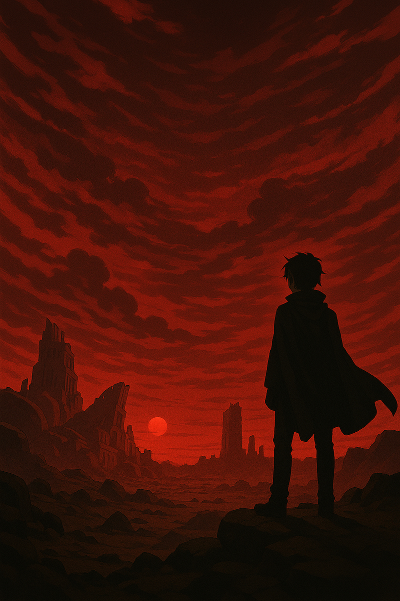
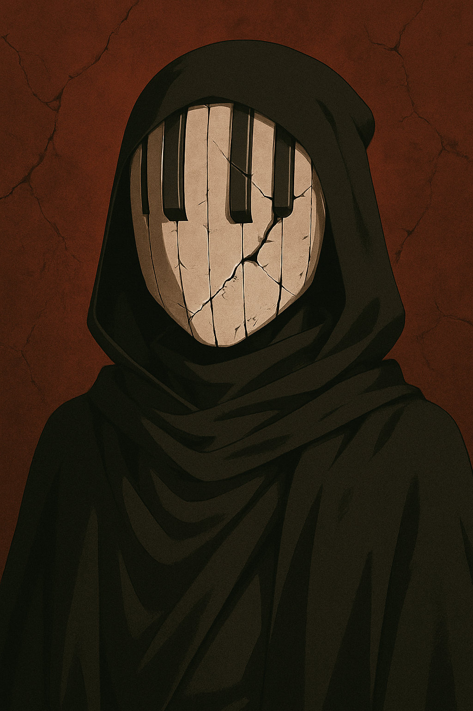
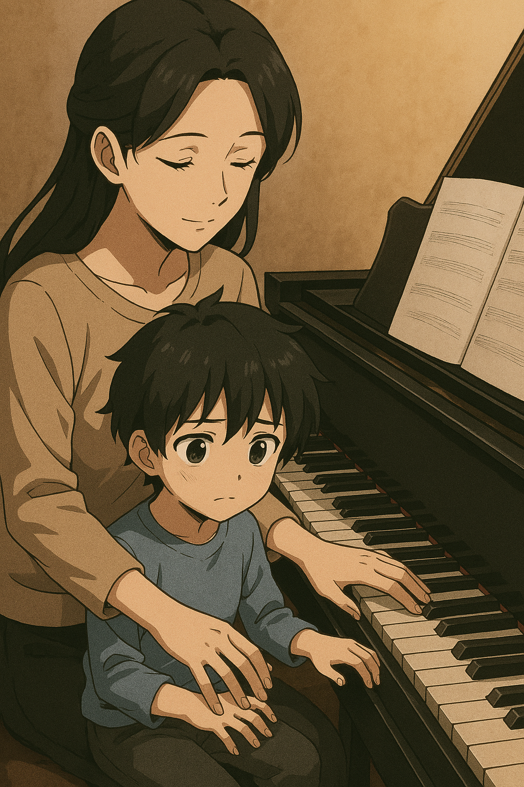
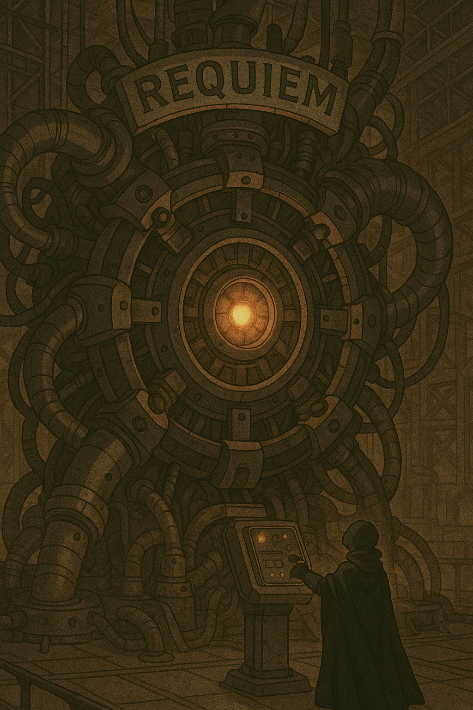
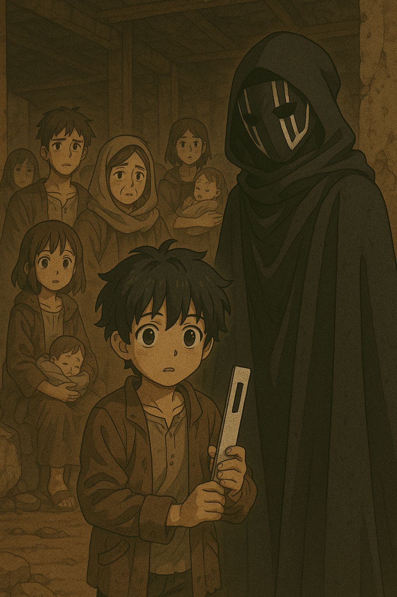
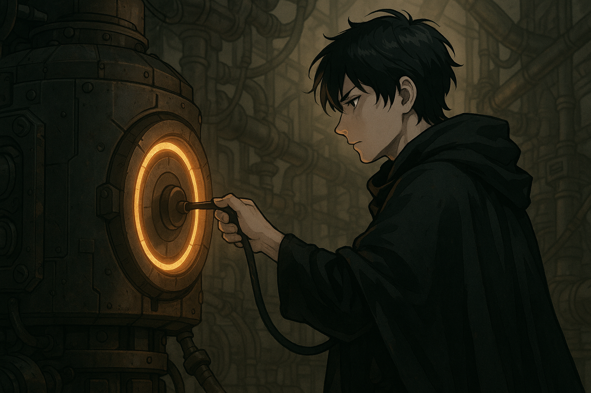
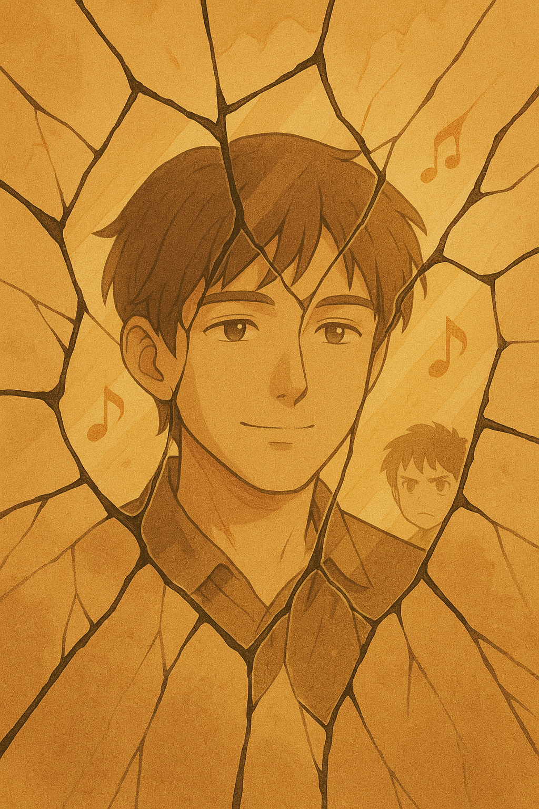
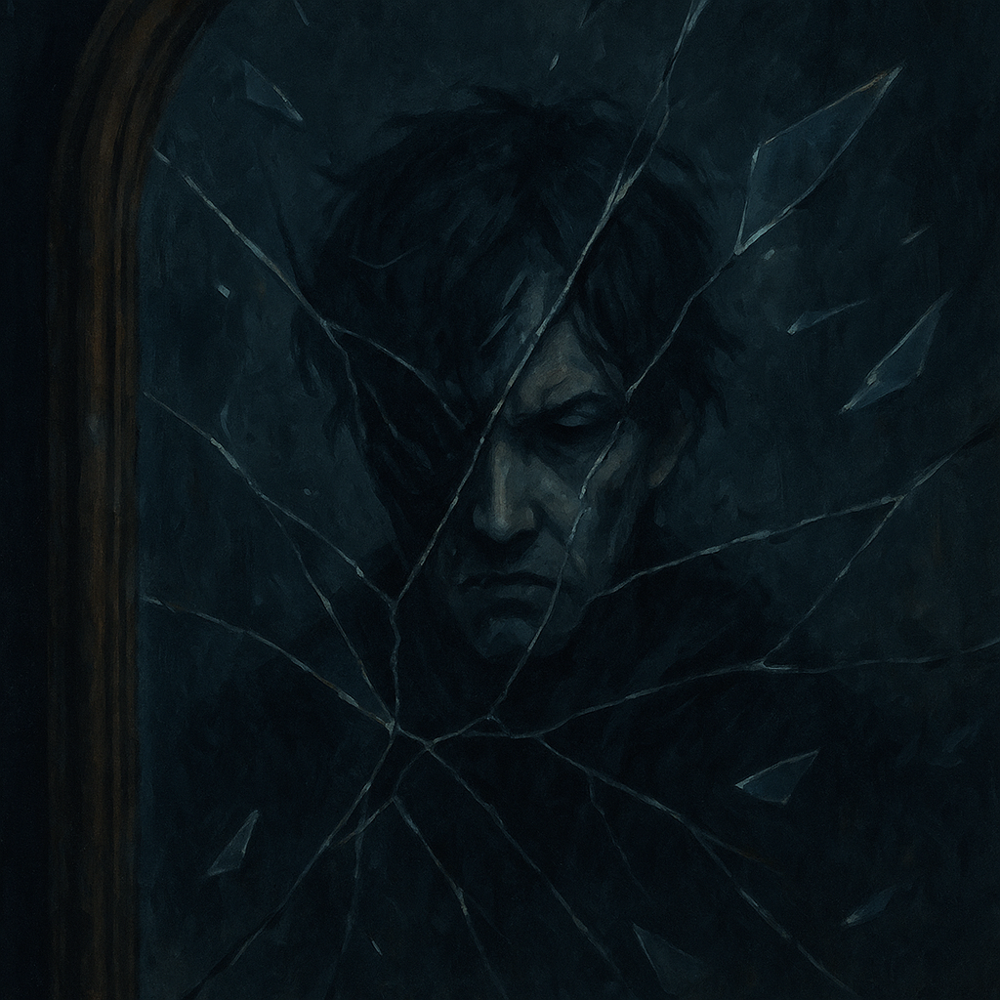
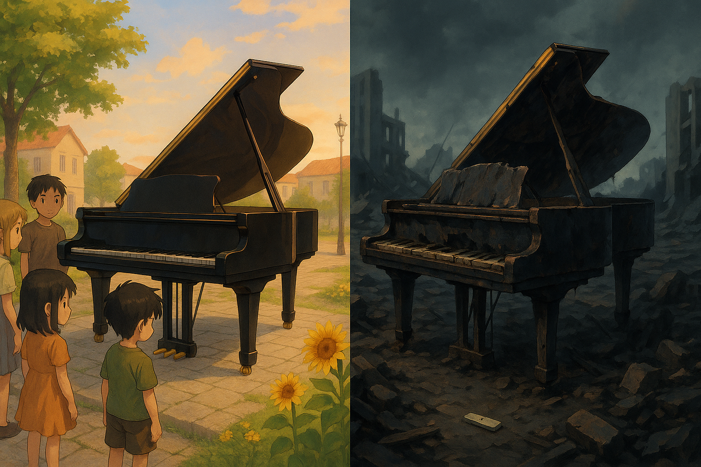

ARIMA KOUSEI
Año 2099, Planeta APRIL. Un villano gobierna con un único objetivo: destruir el mundo que le arrebató todo.
El Símbolo Roto
Su capa negra y máscara de piano reflejan su arte perdido. "La música murió con ella", murmura.
Flashback
Hace 20 años, su madre, una pianista, murió protegiéndolo. "Prometí vengarme de este mundo injusto."
La Máquina del Caos
Arima activa "Requiem", un dispositivo que hará estallar APRIL. "Nadie merece este lugar."
Los Inocentes
Descubre que entre las víctimas hay huérfanos como él. Uno le entrega una tecla de piano: "Es todo lo que tengo."
Decisión
Arima desconecta "Requiem". "No seré como los que me destruyeron."
Nueva Esperanza

Los supervivientes lo miran con sorpresa. "¿Por qué nos salvaste?"
Reconstrucción
Arima usa su tecnología para ayudar a reconstruir APRIL. "Quizá el arte no está muerto."
Decisión
Arima ignora a los inocentes. "El dolor no tiene favoritos."
Caos
APRIL estalla en llamas. El niño lo maldice: "Eres un monstruo."
Vacío
Arima se quita la máscara y llora. "¿Por qué sigo vacío?"
Reflexión Final
"El cuidado del otro sana heridas."
Reflexión Final
"El egoísmo es la prisión más fuerte."
Créditos Éticos
Basado en teorías del curso:
- Ética de la liberación
- Utilitarismo negativo
- Ética del cuidado
¿Qué elegirías tú?
Revisa las actividades 1 y 2 para profundizar en estas teorías éticas.